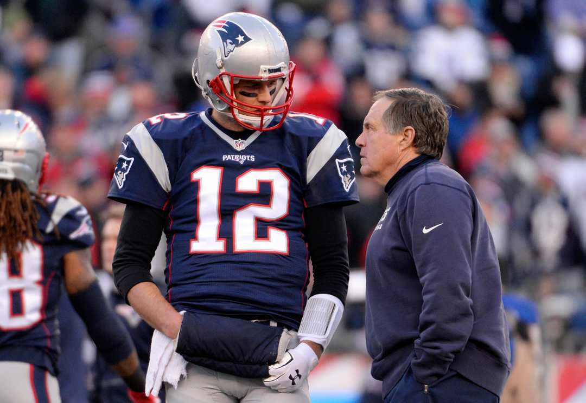

Who dished on Patriots QB Tom Brady souring on Bill Belichick?
| USA TODAY
Published 11:01 AM EDT Sep 19, 2018When The New York Times published the anonymous op-ed alleging President Trump is incapable of doing his job and democracy is under threat, speculation about the identity of Mr. or Mrs. Anonymous ensued.
No less is warranted for the anonymous source who allegedly told the author of a new book, "Belichick: The Making of the Greatest Football Coach of All Time," that Brady has “had enough’’ of New England Patriots coach Bill Belichick.

Patriots quarterback Tom Brady has thrown five touchdowns this season. Robert Deutsch-USA TODAY Sports
Who could be the source cited in Ian O’Connor’s book?
Here, without further adieu, are the best guesses ...
1. Gisele
Brady's wife knows all — if Brady wears boxers or briefs, if Brady sneaks an occasional Snickers bar in violation of his TB12 diet and how Brady feels about his grumpy coach.
In 2017, Gisele told CBS Morning News that Brady had dealt with an unreported concussion. The Patriots declined to comment, but Brady didn't, saying of his wife, “She's there every day. I mean, we go to bed in the same bed every night, so I think she knows when I'm sore, she knows when I'm tired, she knows when I get hit.’’
She might have felt the urge to dish unreported info -- if her identity was protected.
2. Rob Gronkowski
What, you think all Brady and Gronk talk about is pass routes?
Surely these guys have shared their feelings about hoodied Mr. Grumpy. And Gronk, whose offseason partying is well documented, might have let slip Brady’s feelings and then demanded anonymity.
And if Gronk demands anonymity, well, are you going to refuse?
More: NFL QB Hot Sheet: Time to believe in Blake Bortles?
More: Which of NFL's 0-2 teams still could make playoffs this season?
Would be foolish to rule them out.
3. Alex Guerrero
What, you thought Brady’s personal trainer would forgive and forget after Belichick restricted Guerrero’s access to the Patriots’ sideline during games and to parts of the Patriots’ headquarters? Sharing this juicy info anonymously would be sweet revenge for Guerrero.
4. Tom Brady
After 18-plus seasons of playing with Belichick, maybe the chance for Brady to bare all on his feelings about his coach was too good to resist — especially if his anonymity was protected.
5. The Deflategate Suspects
The former Patriots equipment guys are probably grateful Brady had their backs during the NFL’s investigation that focused on whether Brady had any knowledge of the allegedly inflated footballs. If the NFL is right and Brady was in cahoots with these two equipment guys, here’s guessing those guys know about how Brady felt about Belichick.
Then again, maybe it was Brady’s father. Or his agent. Or ...
Let the speculation continue. Published 11:01 AM EDT Sep 19, 2018
© Copyright Gannett 2018